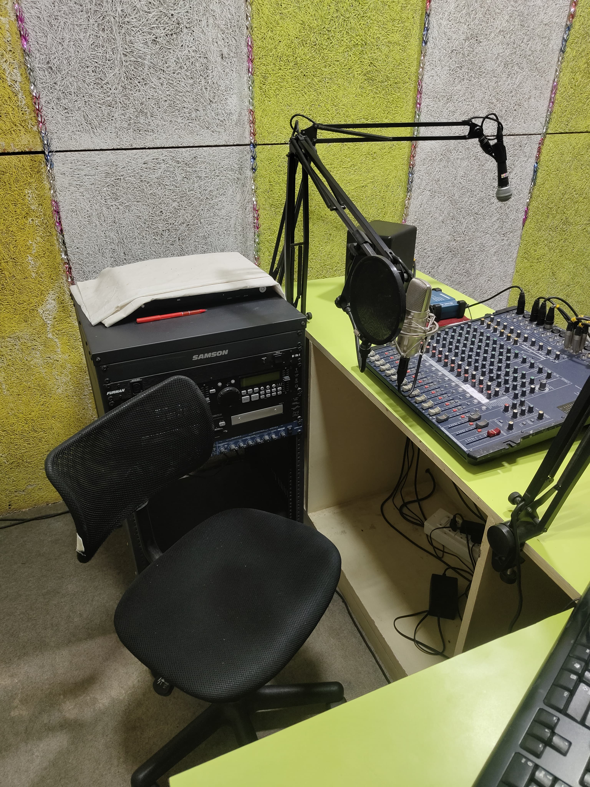
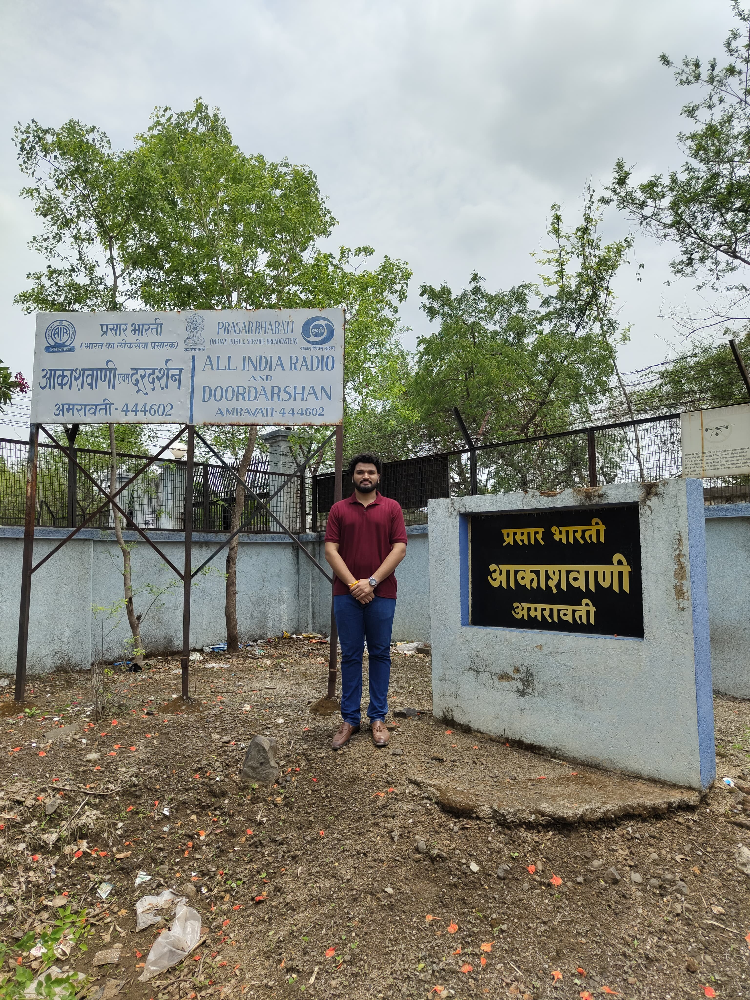
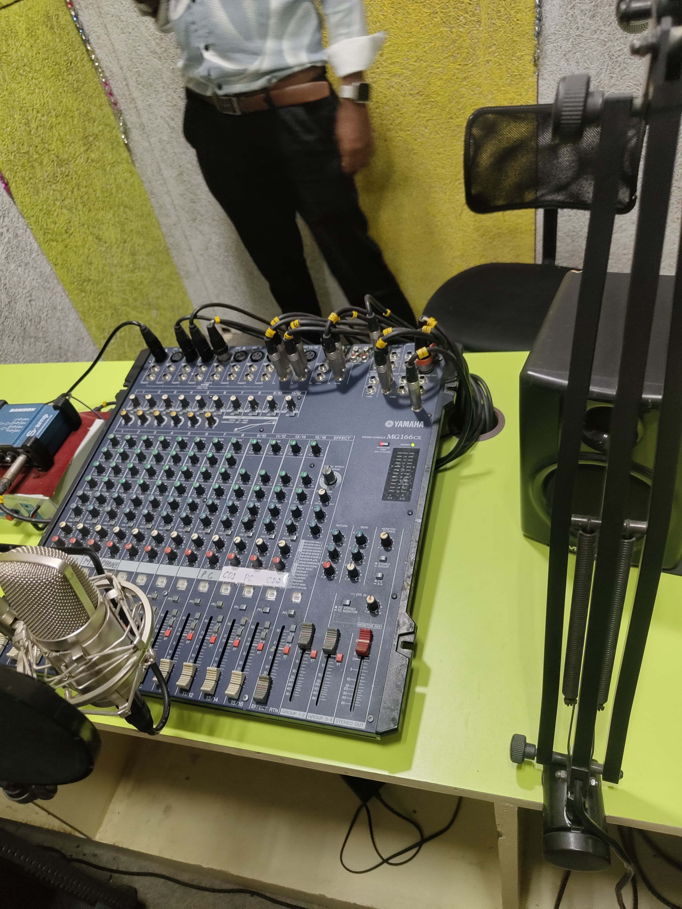
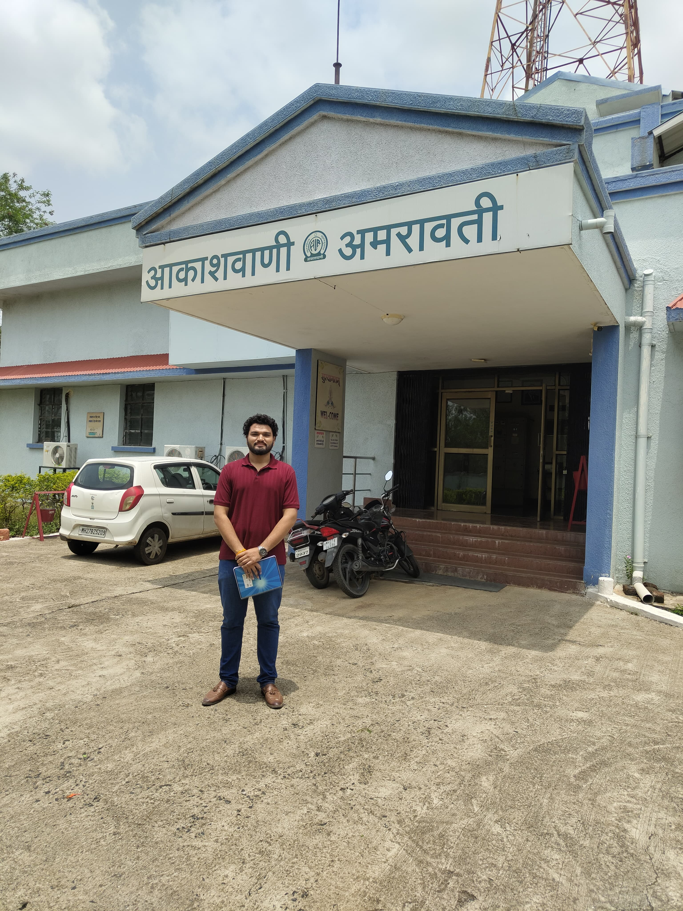
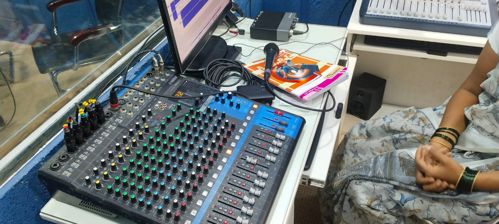
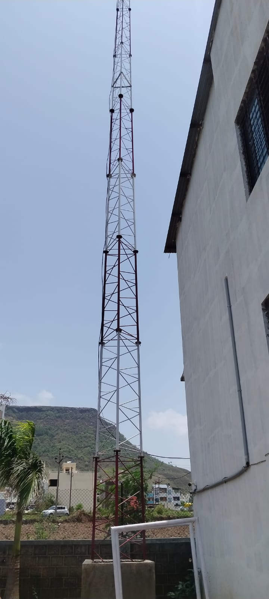

Community Radio Station
Leading the establishment of a community-focused radio station from concept to launch, emphasizing cost-efficiency and operational excellence.
Project Info
- My Role: Project Lead
- Organization: Radio Himmat
- Core Skills: Negotiation, Vendor Management, Operations
- Key Achievement: 40% Cost Reduction
Project Overview
This project involved the complete, ground-up establishment of a community radio station for Maharashtra Gram Darpan. As the project lead, I was responsible for every phase of development, from the initial planning and technical setup to the final launch and operational handover.
My primary focus was on ensuring a successful launch while maintaining strict budgetary control. This required a multifaceted approach that combined technical oversight, strategic sourcing, and robust team management.
Key Responsibilities
- Oversaw all field execution and managed the deployment team to ensure milestones were met on schedule.
- Sourced and procured all necessary broadcasting equipment, managing vendor relationships and finalizing technical specifications.
- Conducted rigorous negotiations with suppliers, most notably with ATC Labs, to significantly reduce equipment costs from an initial quote of ₹5 lakhs to a final cost of ₹3 lakhs.
- Served as the primary point of communication between technical teams, vendors, and organizational stakeholders.
Project Gallery





